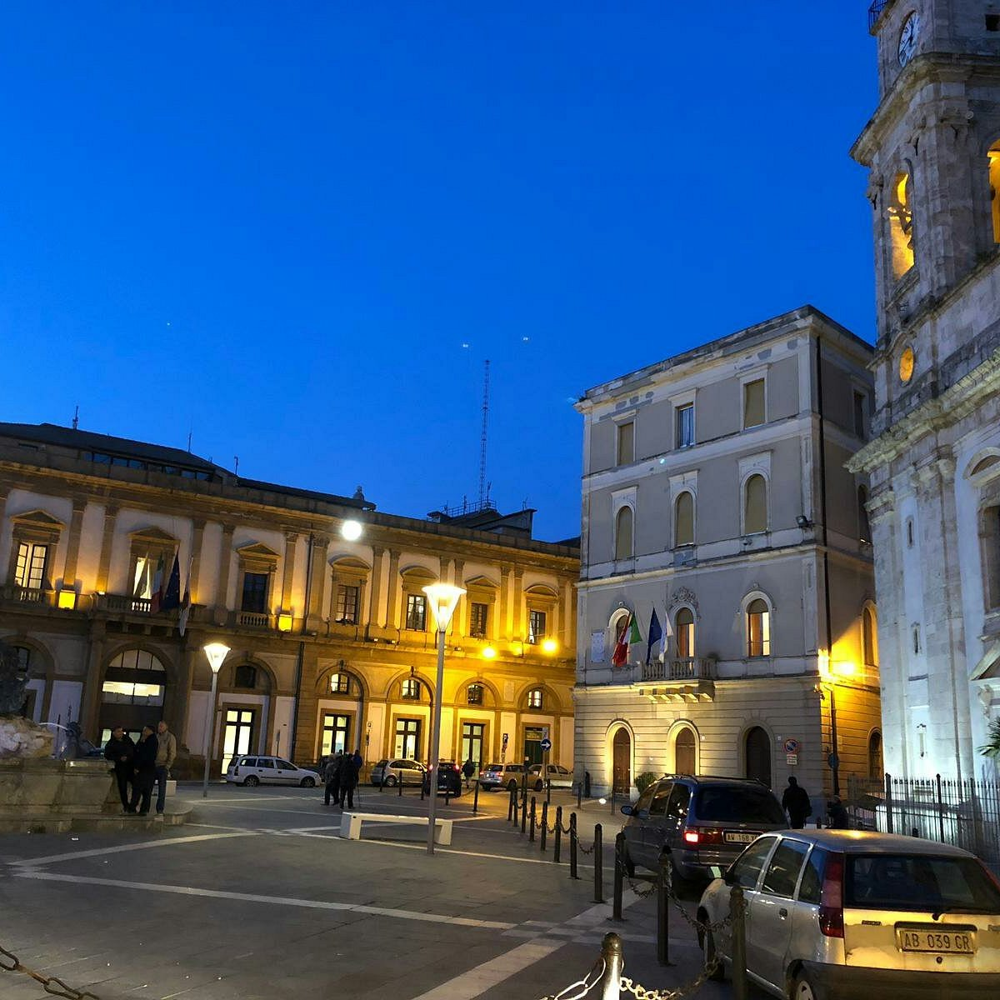
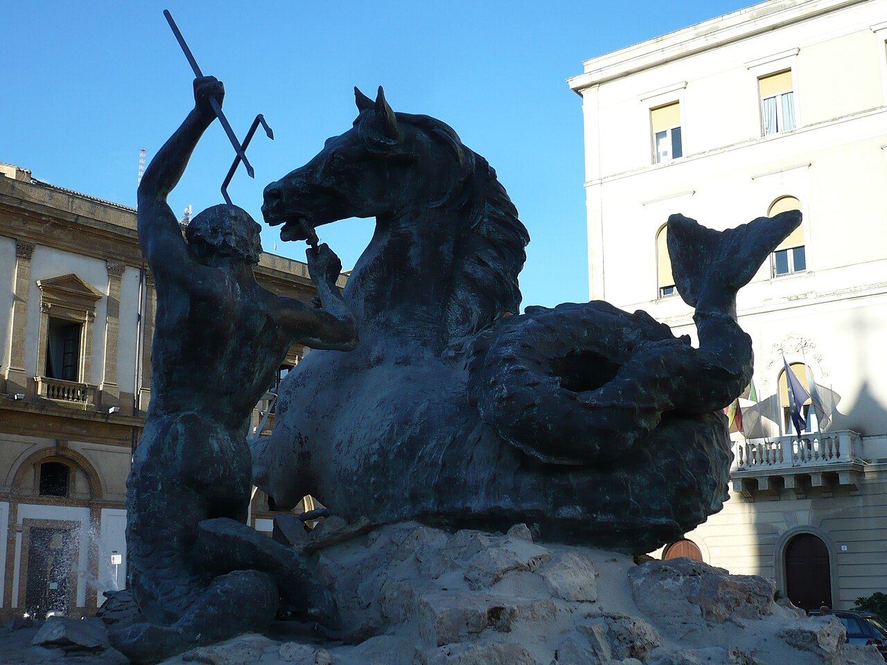
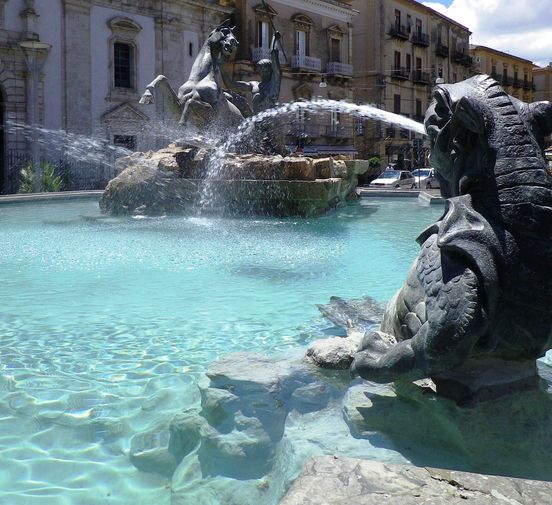

Caltanissetta
La piazza principale di Caltanissetta è Piazza Garibaldi che accoglie al suo centro la Fontana del Tritone, opera in bronzo che è diventata il simbolo stesso di Caltanissetta e delle sue radici mitologiche. La leggenda narra di un mostruoso tritone che terrorizzava le coste siciliane, finché non fu domato e trasformato in pietra per sorvegliare il cuore dell'isola e le sue preziose miniere.
Piazza Garibaldi la piazza principale di Caltanissetta. Essa contiene numerosi siti di interesse: ad Oriente si innalza la bellissima Cattedrale di Caltanissetta, ad Occidente la Chiesa di San Sebastiano, a Nord il Palazzo del Carmine che ospita il Centro Multimediale di Informazione e Accoglienza Turistica, a Sud una facciata del Palazzo Salomone. Il centro della Piazza è arricchito con la meravigliosa Fontana del Tritone, realizzata dallo scultore Michele Tripisciano e progettata dall’archittetto Gaetano Averna. Negli anni 2008-2009 la pavimentazione di questa Piazza a Caltanissetta è stata sostituita con basole in pietra lavica, rendendo l’aspetto più gradevole.


L’opera mette in scena un potente Tritone avvinghiato a un cavallo marino selvaggio, mentre mostri acquatici soffiano acqua dal basso. Per i cittadini, questo scontro non ha nulla a che fare con il mare: è l'allegoria della forza d'animo antropica, il simbolo di una terra legata alle dure miniere di zolfo che doma le avversità della natura con la sola forza della ragione e del sacrificio. La leggenda popolare ha poi avvolto l'opera in un alone di perfezione ossessiva, tramandando il mito che l'anatomia del cavallo fosse talmente realistica e priva di difetti da sembrare viva sotto lo scorrere costante dell'acqua.
Il vero incantesimo, però, si compie ogni anno durante la Settimana Santa. Quando i maestosi e sacri gruppi delle Vare sfilano in Piazza Garibaldi, si ritrovano a girare proprio attorno a questa fontana. In quel preciso istante, il sacro della devozione cristiana e il profano del mito pagano si fondono, trasformando il Tritone nel custode immortale dell'identità e del folklore nisseno.


Scansiona il codice QR per raggiungere Piazza San Gerlando.